The next frontier of AI is the physical world.
We extend foundation models downward into reality;
an artificial general scientist, engineer, and
inventor that learns through interaction.
We build self-improving world models. The LLM already holds a vast ontology of the world and externalizes it by writing programs, because a program is a model. It writes an executable model of a domain, proposes minimal experiments to resolve what's uncertain, and tests its predictions against reality.
Previous Tech Lead & Manager at Google AI, YouTube, Amazon, & CapitalOne. PhD in foundations of AGI.

Previous Area Tech Lead for on-device AI at Google Maps. Co-founder & CTO of CleverSense (acquired by Google in 2011).